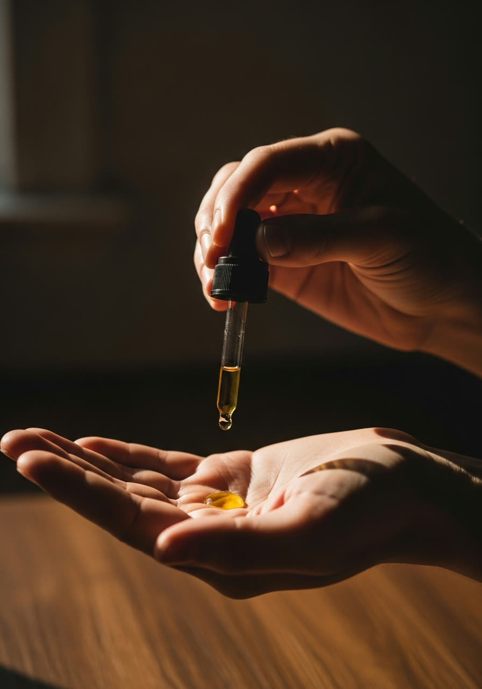

Authentic Thai Healing,
in the Heart of Mayo
Traditional Thai massage in Newport, Co. Mayo. Book your session today and feel the change.

From Bangkok's Temples to Mayo's Coast
Trained at the prestigious Wat Po Traditional Medical School in Bangkok — the birthplace of Thai massage — Chiraphat has devoted 15 years to the art of traditional healing. In 2022 she brought that lifetime of expertise home to Newport, founding Mayo Authentic Thai Massage.
Since then, more than 1,000 clients have walked out of her studio lighter, looser and calmer — and over 60% of them keep coming back. For people across Mayo, this is the massage studio they trust with their bodies.
Read Our Full Story →Therapies for Every Body
From traditional Thai and deep tissue to relaxing and pain-relief massage — gentle, expert hands trusted by the people of Mayo through injury, tension and everyday aches.
View All Treatments ✦
Simple, Honest Rates
One standard rate across our classic therapies — choose the time your body needs.
Essential
- Full one-hour session
- Any classic therapy
- Personal consultation
- Herbal balm finish
Restore
- Extended 90-minute session
- Any classic therapy
- Personal consultation
- Focus on problem areas
- Herbal balm finish
Renew
- Full two-hour journey
- Combine two therapies
- Personal consultation
- Head-to-toe treatment
- Herbal balm finish
Every treatment is €50 / €75 / €100 for 60 / 90 / 120 minutes — see the full price list.
Stories of Relief & Renewal
"The most authentic Thai massage I've had outside Thailand. My back pain was gone for weeks after one deep tissue session."
"I came in wound up with months of tension and left feeling completely restored. So gentle, so professional — I honestly don't know how I'd have managed without her."
"Years of sciatica and nothing helped until I found this studio. I now go every month — worth every cent of the drive from Castlebar."
"A hidden gem between Newport and Mulranny. The oil massage is pure heaven — you float out the door afterwards."
"I'm at a desk all day and my shoulders were in bits. The head, neck and shoulder massage eased months of tension in one hour — I walked out feeling lighter than I have in ages."
"Genuine Wat Po training and it shows — strong, precise and completely professional. The real thing, right here in Mayo. I wouldn't go anywhere else."
Good to Know
We start with a short consultation about your health, pain points and what you'd like from the session. For traditional Thai massage you stay in loose, comfortable clothing; for oil-based therapies you undress to your comfort level and are draped with towels at all times.
Traditional Thai massage is done fully clothed on a mat, using acupressure and assisted stretching — it's energising and great for mobility. Oil massage is done on the table with warm oils and flowing strokes — it's deeply relaxing and gentler on the body. Many clients alternate between the two.
No — sessions are strictly by appointment only, so please don't call to the studio without booking first. Get in touch by phone, text or WhatsApp and we'll set up a time that suits you.
Booking is by phone call, text or WhatsApp only — call or message us on +353 89 223 5714. We'll confirm your time within a few hours. Appointment only — we don't take walk-ins.
The studio is in Knockbreaga, on the road between Newport and Mulranny in Co. Mayo — a calm, private home studio with free parking right outside.
For general wellbeing, every 3–4 weeks works well for most people. For chronic pain or injury recovery we may suggest weekly sessions at first, spacing them out as your body improves — over 60% of our clients return regularly.
Ready to Feel Like Yourself Again?
Your body has carried you this far. Let it rest, recover and renew in expert hands.
Book Your Session →